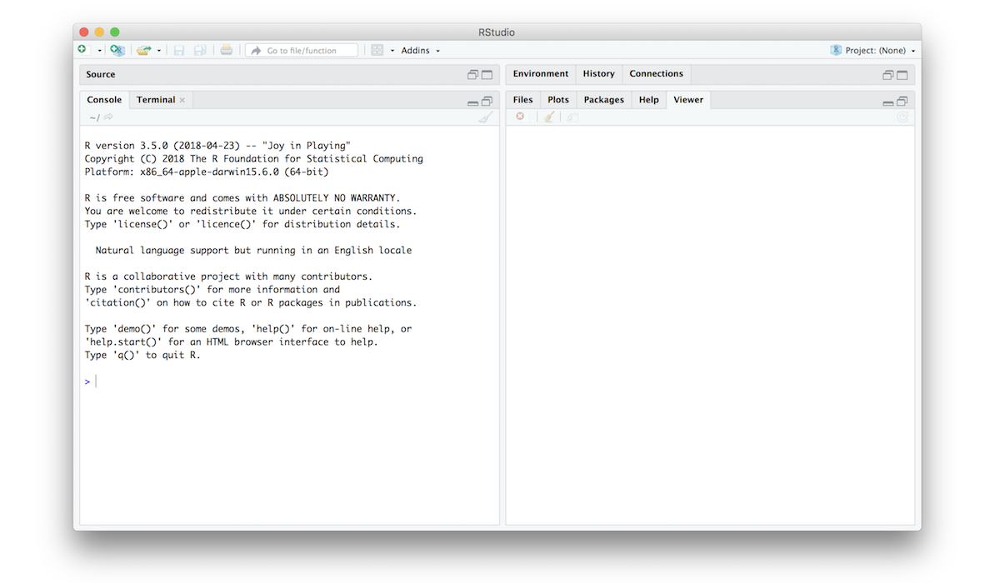
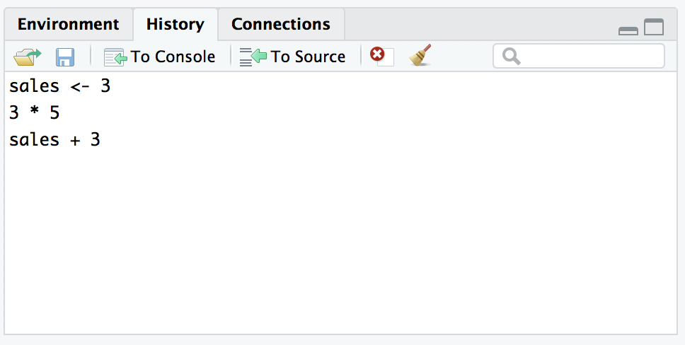

- Getting started
Machine dreams hold a special vertigo.
–William Gibson, Count Zero, 1986
In this chapter I’ll discuss how to get started in R. I’ll briefly talk about how to download and install R, then show you how to write R commands. The goal in this chapter is not to learn any statistical or programming concepts: we’re just trying to learn how R works and get comfortable interacting with the system. We’ll spend a bit of time using R as a simple calculator, since that’s the easiest thing to do with R, just to give you a feel for what it’s like to work in R.
1.1 Installing R & RStudio
An important distinction to remember is between the R programming language itself, and the software you use to interact with R. You could choose to interact with R directly from the terminal, but that’s painful, so most people use an integrated development environment (IDE), which takes care of a lot of boring tasks for you. For this class, we’ll use the popular Rstudio IDE. To get started, make sure you have both R and RStudio installed on your computer. Both are free and open source, and for most people they should be straightforward to install.
Installing R: Go to the R website and download the installer file. Once downloaded, open the installer file and follow the instructions.
Installing RStudio: Go to the R studio website, and follow the links to download RStudio. The version you want is the “RStudio Desktop”. Once the installer is downloaded, open it and follow the instructions.
To get started, open the Rstudio application (i.e., RStudio.exe or RStudio.app), not the vanilla application (i.e., not R.exe or R.app). You should be looking at something like this:

In the bottom left hand corner you’ll see a panel labelled Console, and a whole lot of text that doesn’t make much sense. Ignore it for now! The important part is this…
>… which has a flashing cursor next to it. That’s the command prompt. When you see this, it means that R is waiting patiently for you to do something! So it’s time to get started!
1.2 R commands
One of the easiest things you can do with R is use it as a simple calculator, so it’s a good place to start. For instance, try typing 30, and hitting enter. When you do this, you’ve entered a command, and R will execute that command. What you see on screen now will be this:
10 + 20## [1] 30Not a lot of surprises in this extract. But there’s a few things worth talking about, even with such a simple example. Firstly, it’s important that you understand how to read the extract. In this example, what I typed was the 10 + 20 part at the top, and the content below is what R produced.
Secondly, it’s important to understand how the output is formatted. When you look at the output on your screen it will probably look like this [1] 30. Obviously, the correct answer to the sum 10 + 20 is 30, and not surprisingly R has printed that out as part of its response. But it’s also printed out this [1] part, which probably doesn’t make a lot of sense to you right now. You’re going to see that a lot. I’ll talk about what this means in a bit more detail later on, but for now you can think of [1] 30 as if R were saying “the answer to the first question you asked is 30”. That’s not quite the truth, but it’s close enough for now. And in any case it’s not really very interesting at the moment: we only asked R to calculate one thing, so obviously there’s only one answer printed on the screen. Later on this will change, and the [1] part will start to make a bit more sense. For now, I just don’t want you to get confused or concerned by it.
1.2.1 Avoid typos
Before we go on to talk about other types of calculations that we can do with R, there’s a few other things I want to point out. The first thing is that, while R is good software, it’s still software. It’s pretty stupid, and because it’s stupid it can’t handle typos. It takes it on faith that you meant to type exactly what you did type. For example, suppose that you forgot to hit the shift key when trying to type +, and as a result your command ended up being 10 = 20 rather than 10 + 20. Here’s what happens:
10 = 20## Error in 10 = 20: invalid (do_set) left-hand side to assignmentWhat’s happened here is that R has attempted to interpret 10 = 20 as a command, and spits out an error message because the command doesn’t make any sense to it. When a human looks at this, and then looks down at his or her keyboard and sees that + and = are on the same key, it’s pretty obvious that the command was a typo. But R doesn’t know this, so it gets upset. And, if you look at it from its perspective, this makes sense. All that R “knows” is that 10 is a legitimate number, 20 is a legitimate number, and = is a legitimate part of the language too. In other words, from its perspective this really does look like the user meant to type 10 = 20, since all the individual parts of that statement are legitimate and it’s too stupid to realise that this is probably a typo. Therefore, R takes it on faith that this is exactly what you meant… it only “discovers” that the command is nonsense when it tries to follow your instructions, typo and all. And then it whinges, and spits out an error.
Even more subtle is the fact that some typos won’t produce errors at all, because they happen to correspond to “well-formed” R commands. For instance, suppose that not only did I forget to hit the shift key when trying to type 10 + 20, I also managed to press the key next to one I meant do. The resulting typo would produce the command 10 - 20. Clearly, R has no way of knowing that you meant to add 20 to 10, not subtract 20 from 10, so what happens this time is this:
10 - 20## [1] -10In this case, R produces the right answer, but to the the wrong question.
To some extent, I’m stating the obvious here, but it’s important. The people who wrote R are smart. You, the user, are smart. But R itself is dumb. And because it’s dumb, it has to be mindlessly obedient. It does exactly what you ask it to do. There is no equivalent to “autocorrect” in R, and for good reason. When doing advanced stuff – and even the simplest of statistics is pretty advanced in a lot of ways – it’s dangerous to let a mindless automaton like R try to overrule the human user. But because of this, it’s your responsibility to be careful. Always make sure you type exactly what you mean. When dealing with computers, it’s not enough to type “approximately” the right thing. In general, you absolutely must be precise in what you say to R … like all machines it is too stupid to be anything other than absurdly literal in its interpretation.
1.2.2 R is flexible with spacing?
Of course, now that I’ve been so uptight about the importance of always being precise, I should point out that there are some exceptions. Or, more accurately, there are some situations in which R does show a bit more flexibility than my previous description suggests. The first thing R is smart enough to do is ignore redundant spacing. What I mean by this is that, when I typed 10 + 20 before, I could equally have done this
10 + 20## [1] 30and get exactly the same answer. However, that doesn’t mean that you can insert spaces in any old place. For instance, when you open up R it suggests that you type citation() to get some information about how to cite R:
citation()##
## To cite R in publications use:
##
## R Core Team (2018). R: A language and environment for
## statistical computing. R Foundation for Statistical Computing,
## Vienna, Austria. URL https://www.R-project.org/.
##
## A BibTeX entry for LaTeX users is
##
## @Manual{,
## title = {R: A Language and Environment for Statistical Computing},
## author = {{R Core Team}},
## organization = {R Foundation for Statistical Computing},
## address = {Vienna, Austria},
## year = {2018},
## url = {https://www.R-project.org/},
## }
##
## We have invested a lot of time and effort in creating R, please
## cite it when using it for data analysis. See also
## 'citation("pkgname")' for citing R packages.Okay, that’s good to know. Let’s see what happens when I try changing the spacing. If I insert spaces in between the word and the parentheses, or inside the parentheses themselves, then all is well. But insertinhg spaces in the middle of the commands, not so much. Try these three just to see:
citation () # works!
citation( ) # works!
cita tion() # doesn't work1.2.3 R knows you’re not finished?
One more thing I should point out. If you hit enter in a situation where it’s “obvious” to R that you haven’t actually finished typing the command, R is just smart enough to keep waiting. For example, if you type 10 + and then press enter, even R is smart enough to realise that you probably wanted to type in another number. So here’s what happens:
> 10 +
+and there’s a blinking cursor next to the plus sign. What this means is that R is still waiting for you to finish. It “thinks” you’re still typing your command, so it hasn’t tried to execute it yet. In other words, this plus sign is actually another command prompt. It’s different from the usual one (i.e., the > symbol) to remind you that R is going to “add” whatever you type now to what you typed last time. For example, if I then go on to type 20 and hit enter, what I get is this:
> 10 +
+ 20
[1] 30And as far as R is concerned, this is exactly the same as if you had typed 10 + 20. Similarly, consider the citation() command that we talked about in the previous section. Suppose you hit enter after typing citation(. Once again, R is smart enough to realise that there must be more coming – since you need to add the ) character – so it waits. I can even hit enter several times and it will keep waiting:
> citation( +
+
+)Sometimes when doing this, you’ll eventually get yourself in trouble (it happens to us all). Maybe you start typing a command, and then you realise you’ve screwed up. For example,
> citblation(
+
+You’d probably prefer R not to try running this command, right? If you want to get out of this situation, just hit the escape key. R will return you to the normal command prompt (i.e. >) without attempting to execute the botched command.
That being said, it’s not often the case that R is smart enough to tell that there’s more coming. For instance, in the same way that I can’t add a space in the middle of a word, I can’t hit enter in the middle of a word either. If I hit enter after typing citat I get an error, because R thinks I’m interested in something called citat and can’t find it:
citat## Error in eval(expr, envir, enclos): object 'citat' not foundWhat about if I typed citation and hit enter, without the parentheses? In this case we get something very odd, something that we definitely don’t want, at least not at this stage. Here’s what happens:
citation## function (package = "base", lib.loc = NULL, auto = NULL)
## {
## if (!is.null(auto) && !is.logical(auto) && !any(is.na(match(c("Package",
## "Version", "Title"), names(meta <- as.list(auto))))) &&
## !all(is.na(match(c("Authors@R", "Author"), names(meta))))) {
## auto_was_meta <- TRUE
BLAH BLAH BLAHwhere the BLAH BLAH BLAH goes on for rather a long time, and you don’t know enough R yet to understand what all this gibberish actually means. This incomprehensible output can be quite intimidating to novice users, and unfortunately it’s very easy to forget to type the parentheses; so almost certainly you’ll do this by accident. Do not panic when this happens. Simply ignore the gibberish.
1.3 Operations
Okay, now that we’ve discussed some of the tedious details associated with typing R commands, let’s get back to learning how to use the most powerful piece of statistical software in the world as a $2 calculator. So far, all we know how to do is addition. Clearly, a calculator that only did addition would be a bit stupid, so I should tell you about how to perform other simple calculations using R. But first, some more terminology. Addition is an example of an “operation” that you can perform (specifically, an arithmetic operation), and the operator that performs it is +. To people with a programming or mathematics background, this terminology probably feels pretty natural, but to other people it might feel like I’m trying to make something very simple (addition) sound more complicated than it is (by calling it an arithmetic operation). To some extent, that’s true: if addition was the only operation that we were interested in, it’d be a bit silly to introduce all this extra terminology. However, as we go along, we’ll start using more and more different kinds of operations, so it’s probably a good idea to get the language straight now, while we’re still talking about very familiar concepts like addition!
1.3.1 Arithmetic operations
So, now that we have the terminology, let’s learn how to perform some arithmetic operations. R has operators that correspond to the basic arithmetic we learned in primary school: addition is +, subtraction is -, multiplication is * and division ia /. As you can see, R uses fairly standard symbols to denote each of the different operations you might want to perform: if I wanted to find out what 57 times 61 is (and who wouldn’t?), I can use R instead of a calculator, like so:
57 * 61## [1] 3477So that’s handy.
There are three other arithmetic operations that I should probably mention: taking powers, doing integer division, and calculating a modulus. Of the three, the only one that is of any real importance for the purposes of this book is taking powers, so I’ll discuss that one here: the other two are discussed later.
For those of you who can still remember your high school maths, this should be familiar. But for some people high school maths was a long time ago, and others of us didn’t listen very hard in high school. It’s not complicated. As I’m sure everyone will probably remember the moment they read this, the act of multiplying a number \(x\) by itself \(n\) times is called “raising \(x\) to the \(n\)-th power”. Mathematically, this is written as \(x^n\). Some values of \(n\) have special names: in particular \(x^2\) is called \(x\)-squared, and \(x^3\) is called \(x\)-cubed. One way that we could calculate \(5^4\) in R would be to type in the complete multiplication like so,
5*5*5*5## [1] 625but that does seem a bit tedious. It would be very annoying indeed if you wanted to calculate \(5^{15}\), since the command would end up being quite long. Therefore, to make our lives easier, we use the power operator instead. When we do that, our command to calculate \(5^4\) goes like this:
5^4## [1] 625Much easier.
1.3.2 Order of operations
Okay. At this point, you know how to take one of the most powerful pieces of statistical software in the world, and use it as a $2 calculator. And as a bonus, you’ve learned a few very basic programming concepts. That’s not nothing (you could argue that you’ve just saved yourself $2) but on the other hand, it’s not very much either. In order to use R more effectively, we need to introduce more programming concepts.
In most situations where you would want to use a calculator, you might want to do multiple calcula- tions. R lets you do this, just by typing in longer commands. In fact, we’ve already seen an example of this earlier, when I typed in 5 * 5 * 5 * 5. However, let’s try a slightly different example:
1 + 2 * 4 ## [1] 9Clearly, this isn’t a problem for R either. However, it’s worth stopping for a second, and thinking about what R just did. Clearly, since it gave us an answer of 9 it must have multiplied 2 * 4 (to get an interim answer of 8) and then added 1 to that. But, suppose it had decided to just go from left to right: if R had decided instead to add 1+2 (to get an interim answer of 3) and then multiplied by 4, it would have come up with an answer of 12
To answer this, you need to know the order of operations that R uses.1 If you remember back to your high school maths classes, it’s actually the same order that you got taught when you were at school: the BEDMAS order. Thatis, first calculate things inside Brackets, then calculate Exponents, then Division and Multiplication, then Addition and Subtraction. So, to continue the example above, if we want to force R to calculate the 1 + 2 part before the multiplication, all we would have to do is enclose it in brackets:
(1 + 2) * 4## [1] 12This is a fairly useful thing to be able to do. The only other thing I should point out about order of operations is what to expect when you have two operations that have the same priority: that is, how does R resolve ties? For instance, multiplication and division are actually the same priority, but what should we expect when we give R a problem like 4 / 2 * 3 to solve? If it evaluates the multiplication first and then the division, it would calculate a value of two-thirds. But if it evaluates the division first it calculates a value of siz. The answer, in this case, is that R goes from left to right, so in this case the division step would come first:
4 / 2 * 3## [1] 6All of the above being said, it’s helpful to remember that brackets always come first. So, if you’re ever unsure about what order R will do things in, an easy solution is to enclose the thing you want it to do first in brackets. There’s nothing stopping you from typing (4 / 2) * 3. By enclosing the division in brackets we make it clear which thing is supposed to happen first. In this instance you wouldn’t have needed to, since R would have done the division first anyway, but when you’re first starting out it’s better to make sure R does what you want!
1.4 Functions
The symbols +, -, * and so on are examples of operators. As we’ve seen, you can do quite a lot of calculations just by using these operators. However, in order to do more advanced calculations (and later on, to do actual statistics), you’re going to need to start using functions.2 I’ll talk in more detail about functions and how they work later, but for now let’s just dive in and use a few. To get started, suppose I wanted to take the square root of 225. The square root, in case your high school maths is a bit rusty, is just the opposite of squaring a number. So, for instance, since “5 squared is 25” I can say that “5 is the square root of 25”. The usual notation for this is \(\sqrt{25}=5\), though sometimes you’ll also see it written like this \(25^{0.5} = 5\). This second way of writing it is kind of useful to “remind” you of the mathematical fact that “square root of \(x\)” is actually the same as “raising \(x\) to the power of 0.5”. Personally, I’ve never found this to be terribly meaningful psychologically, though I have to admit it’s quite convenient mathematically. Anyway, it’s not important. What is important is that you remember what a square root is, since it’s kind of useful in statistics!
To calculate the square root of 25, I can do it in my head pretty easily, since I memorised my multiplication tables when I was a kid. It gets harder when the numbers get bigger, and pretty much impossible if they’re not whole numbers. This is where something like R comes in very handy. Let’s say I wanted to calculate the square root of 225. There’s two ways I could do this using R. Firstly, since the square root of 255 is the same thing as raising 225 to the power of 0.5, I could use the power operator ^, just like we did earlier:
225 ^ 0.5## [1] 15However, there’s a second way to do this by using square root function sqrt.
1.4.1 Using functions
To calculate the square root of 255 using the sqrt function, the command I type is this:
sqrt(225)## [1] 15When we use a function to do something, we generally refer to this as calling the function, and the values that we type into the function (there can be more than one) are referred to as the arguments of that function.
Obviously, the sqrt function doesn’t really give us any new functionality, since we already knew how to do square root calculations by using the power operator ^. However, there are lots of other functions in R: in fact, almost everything of interest that I’ll talk about in this book is an R function of some kind. For example, one function that comes in handy quite often is the absolute value function. Compared to the square root function, it’s extremely simple: it just converts negative numbers to positive numbers, and leaves positive numbers alone. Calculating absolute values in R is pretty easy, since R provides the abs function that you can use for this purpose. For instance:
abs(-13)## [1] 131.4.2 Combining functions
Before moving on, it’s worth noting that, in the same way that R allows us to put multiple operations together into a longer command (like 1 + 2 * 4 for instance), it also lets us put functions together and even combine functions with operators if we so desire. For example, the following is a perfectly legitimate command:
sqrt(1 + abs(-8))## [1] 3When R executes this command, starts out by calculating the value of abs(-8), which produces an intermediate value of 8. Having done so, the command simplifies to sqrt(1 + 8). To solve the square root3 it first needs to add 1 + 8 to get 9, at which point it evaluates sqrt(9), and so it finally outputs a value of 3.
1.4.3 Multiple arguments
There’s two more fairly important things that you need to understand about how functions work in R, and that’s the use of “named” arguments, and default values” for arguments. Not surprisingly, that’s not to say that this is the last we’ll hear about how functions work, but they are the last things we desperately need to discuss in order to get you started. To understand what these two concepts are all about, I’ll introduce another function. The round function can be used to round some value to the nearest whole number. For example, I could type this:
round(3.1415)## [1] 3Pretty straightforward, really. However, suppose I only wanted to round it to two decimal places: that is, I want to get 3.14 as the output. The round function supports this, by allowing you to input a second argument to the function that specifies the number of decimal places that you want to round the number to. In other words, I could do this:
round(3.14165, 2)## [1] 3.14What’s happening here is that I’ve specified two arguments: the first argument is the number that needs to be rounded (i.e., 3.1415), the second argument is the number of decimal places that it should be rounded to (i.e., 2), and the two arguments are separated by a comma.
1.4.4 Argument names
In this simple example, it’s not too hard to remember which argument comes first and which one comes second, but as you might imagine it starts to get very difficult once you start using complicated functions that have lots of arguments. Fortunately, most R functions use argument names to make your life a little easier. For the round function, for example the number that needs to be rounded is specified using the x argument, and the number of decimal points that you want it rounded to is specified using the digits argument. Because we have these names available to us, we can specify the arguments to the function by name. We do so like this:
round(x = 3.1415, digits = 2)## [1] 3.14Notice that this is kind of similar in spirit to variable assignment, except that I used = here, rather than <-. In both cases we’re specifying specific values to be associated with a label. However, there are some differences between what I was doing earlier on when creating variables, and what I’m doing here when specifying arguments, and so as a consequence it’s important that you use = in this context.
As you can see, specifying the arguments by name involves a lot more typing, but it’s also a lot easier to read. Because of this, the commands in this book will usually specify arguments by name,4 since that makes it clearer to you what I’m doing. However, one important thing to note is that when specifying the arguments using their names, it doesn’t matter what order you type them in. But if you don’t use the argument names, then you have to input the arguments in the correct order. In other words, these three commands all produce the same output…
round(3.14165, 2)
round(x = 3.1415, digits = 2)
round(digits = 2, x = 3.1415)## [1] 3.14
## [1] 3.14
## [1] 3.14but this one does not…
round(2, 3.14165)## [1] 21.4.5 Default values
Okay, so that’s the first thing I said you’d need to know: argument names. The second thing you need to know about is default values. Notice that the first time I called the round function I didn’t actually specify the digits argument at all, and yet R somehow knew that this meant it should round to the nearest whole number. How did that happen? The answer is that the digits argument has a default value of 0, meaning that if you decide not to specify a value for digits then R will act as if you had typed digits = 0. This is quite handy: most of the time when you want to round a number you want to round it to the nearest whole number, and it would be pretty annoying to have to specify the digits argument every single time. On the other hand, sometimes you actually do want to round to something other than the nearest whole number, and it would be even more annoying if R didn’t allow this! Thus, by having digits = 0 as the default value, we get the best of both worlds.
1.5 RStudio helps!
At this stage you know how to type in basic commands, including how to use R functions. And it’s probably beginning to dawn on you that there are a lot of R functions, all of which have their own arguments. You’re probably also worried that you’re going to have to remember all of them! Thankfully, it’s not that bad. In fact, very few data analysts bother to try to remember all the commands. What they really do is use tricks to make their lives easier. The first (and arguably most important one) is to use the internet. If you don’t know how a particular R function works, Google it. There is a lot of R documentation out there, and almost all of it is searchable! For the moment though, I want to call your attention to a couple of simple tricks that Rstudio makes available to you.
1.5.1 Tab autocomplete
The first thing I want to call your attention to is the autocomplete ability in Rstudio.5 Let’s stick to our example above and assume that what you want to do is to round a number. This time around, start typing the name of the function that you want, and then hit the “tab” key. Rstudio will then display a little window like the one shown here:

In this figure, I’ve typed the letters rou at the command line, and then hit tab. The window has two panels. On the left, there’s a list of variables and functions that start with the letters that I’ve typed shown in black text, and some grey text that tells you where that variable/function is stored. Ignore the grey text for now: it won’t make much sense to you until we’ve talked about packages. There’s a few options there, and the one we want is round, but if you’re typing this yourself you’ll notice that when you hit the tab key the window pops up with the top entry highlighted. You can use the up and down arrow keys to select the one that you want. Or, if none of the options look right to you, you can hit the escape key (“esc”) or the left arrow key to make the window go away.
In our case, the thing we want is the round option, and the panel on the right tells you a bit about how the function works. This display is really handy. The very first thing it says is round(x, digits = 0): what this is telling you is that the round function has two arguments. The first argument is called x, and it doesn’t have a default value. The second argument is digits, and it has a default value of 0. In a lot of situations, that’s all the information you need. But Rstudio goes a bit further, and provides some additional information about the function underneath. Sometimes that additional information is very helpful, sometimes it’s not: Rstudio pulls that text from the R help documentation, and my experience is that the helpfulness of that documentation varies wildly. Anyway, if you’ve decided that round is the function that you want to use, you can hit the enter key and Rstudio will finish typing the rest of the function name for you.
1.5.2 The history pane
One thing R does is keep track of your “command history”. That is, it remembers all the commands that you’ve previously typed. You can access this history in a few different ways. The simplest way is to use the up and down arrow keys. If you hit the up key, the R console will show you the most recent command that you’ve typed. Hit it again, and it will show you the command before that. If you want the text on the screen to go away, hit escape. Using the up and down keys can be really handy if you’ve typed a long command that had one typo in it. Rather than having to type it all again from scratch, you can use the up key to bring up the command and fix it.
The second way to get access to your command history is to look at the history panel in Rstudio. On the upper right hand side of the Rstudio window you’ll see a tab labelled “History”. Click on that, and you’ll see a list of all your recent commands displayed in that panel: it should look something like this:

If you double click on one of the commands, it will be copied to the R console. You can achieve the same result by selecting the command you want with the mouse and then clicking the “To Console” button.
1.6 Exercises
Two exercises that uses skills that you’ve already acquired…
- Calculate the number of seconds in a year, on the simplifying assumption that a year contains exactly 365 days.
- Calculate the square root of your favourite number
Two more that foreshadow where we’re going…
- Type
rep("hello!",100)and take a look at the output. Try to work out what it means - Type
hist(x=rnorm(300))and see what happens. What do you think R has done?
For a more precise statement, see the operator precedence for R↩
A side note for students with a programming background. Technically speaking, operators are functions in R: the addition operator
+is a convenient way of calling the addition function‘+‘(). Thus10+20is equivalent to the function call‘+‘(20, 30). Not surprisingly, no-one ever uses this version. Because that would be stupid.↩A note for the mathematically inclined: R does support complex numbers, but unless you explicitly specify that you want them it assumes all calculations must be real valued. By default, the square root of a negative number is treated as undefined:
sqrt(-9)will produceNaN(not a number) as its output. To get complex numbers, you would typesqrt(-9+0i)and R would now return0+3i. However, since we won’t have any need for complex numbers in this book, I won’t refer to them again.↩The two functions discussed previously,
sqrtandabs, both only have a single argument,x. So I could have typed something likesqrt(x = 225)orabs(x = -13)earlier. The fact that all these functions usexas the name of the argument that corresponds the “main” variable that you’re working with is not entirely a coincidence. That’s a fairly widely used convention. Quite often, the writers of R functions will try to use conventional names like this to make your life easier. Or at least that’s the theory. In practice… it doesn’t always work as well as you’d hope.↩Okay, this isn’t just an Rstudio thing. If you’re running R in a terminal window, tab autocomplete still works, and does so in the way you’d expect↩